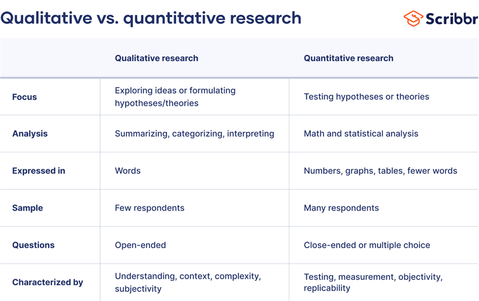

What is User research?
User research is a process aimed at understanding user behaviors, needs, and motivations through various
qualitative and quantitative methods. It plays a critical role in the design and development of products,
services, and systems by providing insights that inform and guide decision-making.
User research is an iterative process, often conducted at various stages of product development to
continually refine and improve the user experience. By placing users at the center of the design process,
organizations can create more effective, efficient, and enjoyable products.
Defining Research Objectives:-
Understand Users: Gain deep insights into the target audience, including their habits, challenges, and
preferences.
Identify Needs: Discover what users need and expect from a product or service.
Enhance User Experience: Create a more satisfying and effective interaction between users and the product.
Improve Usability: Ensure that products are user-friendly and meet the usability standards expected by
users.
Qualitative vs. Quantitative Data Research:-

Choose appropriate qualitative and quantitative research methods based on the objectives. (common method
include)
Qualitative research is often used to gain in-depth understanding of human behavior, emotions, and
experiences. It is especially useful for exploratory, descriptive, and explanatory objectives where detailed
insights are needed.
Interviews: Conduct semi-structured or unstructured interviews to explore participants' thoughts, feelings,
and experiences in depth.
Surveys: Structured questionaries to gather data from a larger user group.
Focus Groups: Facilitate group discussions to gather diverse perspectives and generate new ideas.
Usability Testing: Observing users asthey interact with a prototype or product to identify usability issues.
Contextual Inquiry; Observing user in thier natural environment to understand how they use a product.
Diary Studies: Ask participants to keep diaries or journals to document their experiences over time.
participants record thier experience, behaviors, and thoughts over a
period of time ina diary or journal.
Quantitative research methods are used to collect numerical data that can be statistically analyzed. They are
suitable for objectives that require measurement, comparison, and testing of hypotheses.
Observations and Usability Testing: Observe users intercating with your product to identify usability
issues.
Card Sorting: Organize content and navigation on user input.
Contextual Inquiry: Observe users in thier natural enviroment to understand thier context and needs.
A/B Testing: Compare different versions of a design to determine which performs better.
Recruiting Participants:-
Clearly identify the characteristics of your ideal participants, such as age, gender, occupation, location,
and other relevant criteria.
Ensure a diverse and representive sample to get comprehensive insights.
Conducting Research:-
Execute the chosen research methods, ensuring ethical standards and privacy considerations are maintained.
Collect data through observations, recordings, and user feedback.
Ethical standards in user research are guidelines that ensure the rights, well-being, and dignity of
research participants are protected.
Informed consent: Participants should be fully informed about the purpose of the research,
confidentiality and privacy.
Respect of Each and Every Participants:
Voluantary Participants:Participants in the research should always be voluantary, and participants
should have the right to withdraw at any time any negative consequences.
Transparency:Be open and honest about the research goals, methods, and how the findings will be
used.
Analyzing Data:
Organised the interpret the collected data to identify patterns, themes, and insights.
Use techniques like affinity diagrams, thematic analysis, and statistical analysis for data interpretation.
Synthesizing Findings:
Summarize the research findings into actionable insights.
Create user personas, jounery maps, and empathy maps to Visualize the user's experience and needs.
Communicating Insights:
Share the research findings with stakeholder and the design team.
Use presentations, reports, and visual artifacts to effectively insights.
Applying Insights:
Use the research findings to inform design decisions.
Iterate on designs bades on user feedback and insights gained during the research phase.
Detailed Research Methods:-
User Interviews:
Structured Interviews: Predefined questions are asked in a fix order. this ensures consistency across
different interviews but can the exploration of unexpected topics.
semi-structured Interviews: A flexible set of questions allows the conversation to flow more naturally,
giving space to explore intresting points raised by the user.
Unstructured Interviews: Very open-ended, resembling a conversation. Useful for exploratory research to
uncover unexpected insights.
Surveys and questionaries:
Closed-ended Questions: Provide quantitative data that can be statistically analyzed.
Open-ended Questions: Provide qualitative insights but requires more effort to analyze.
Focus Group:
Facilitated discussions with a small group of users. Useeful for gaining diverse perspectives and generating ideas through interaction.
Requires skilled moderation to manage group dynamics and ensure all voices are heard.